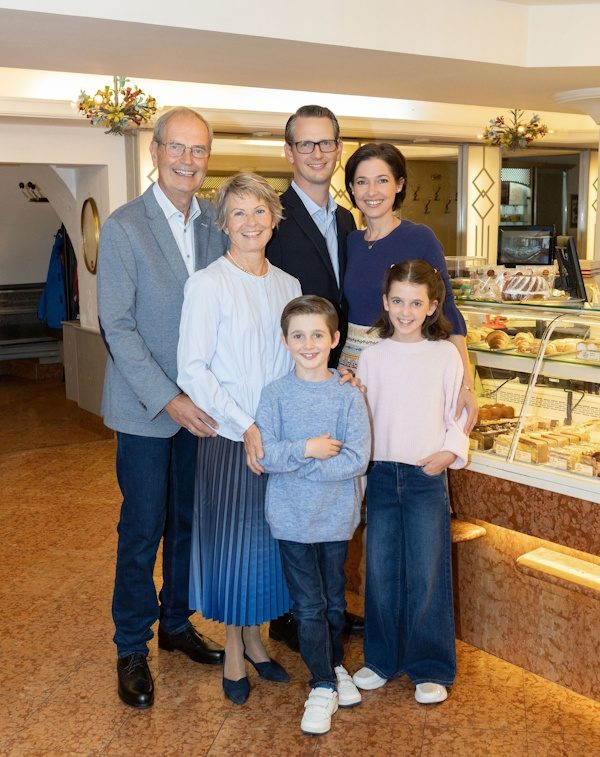

Haus Heiner
Seit über 180 Jahren
durchgehend in Familienbesitz
Wiener Konditorkunst ist unzertrennlich mit dem Namen Heiner verbunden. Kaum ein anderer hat es so gut verstanden, die Tradition der altösterreichischen Konditorei mit den Bedürfnissen der Gegenwart nach leichten, bekömmlichen Süßspeisen und originellen Formen zu verknüpfen.
Portrait
Sechs Generationen – und die siebte spielt schon mit
Unser Unternehmen besteht seit über 180 Jahren. Gegenwärtig führen Michael Stuller und seine Frau Verena Eissner-Eissenstein die langjährige Familientradition weiter. Wie ihre Vorfahren legen sie größten Wert auf die Einmaligkeit des Angebots, die Qualität der Produkte und die Ausbildung ihrer MitarbeiterInnen.
Die Liebe zum Konditorgewerbe zeichnet schon seit Generationen unsere Familie aus. Wir sind uns der Verantwortung bewusst, die mit dem Königlich Bayerischen Hoftitel, der Würde eines K.u.K. Hofzuckerbäckers und der Staatlichen Auszeichnung verbunden ist. Mit dementsprechend großem Engagement halten wir an unserem Handwerk fest.
- Mag. (FH) Michael Stuller, Konditormeister
- Mag. Verena Eissner-Eissenstein
- Frühere Generationen: KR Dr. Paulus Stuller, Prof. Walther Stuller, Irmtraud Stuller, Berta Heiner, Ludwig Heiner
Philosophie
Erholung und Genuss
Unser Ziel ist es, Ihnen Erholung und Genuss zu bieten. Hervorragendes Service und gleichbleibend hohe Qualität unserer Produkte sorgen dafür, dass die Tradition des Genießens beim Heiner bewahrt wird. Unsere Garantie dafür ist nicht nur die Verwendung hochwertiger Rohstoffe, sondern auch die fundierte Ausbildung unserer mehr als hundert MitarbeiterInnen.
Das internationale Ansehen der Heiner-Ausbildung spiegelt sich im großen Interesse ausländischer KonditorInnen aus aller Welt wider. Die Rohstoffe und Zutaten für unsere Köstlichkeiten sind reine Naturprodukte von höchster Qualität und Frische. Handwerkliche Erzeugung ist für uns nicht nur Verpflichtung, sondern gelebte Überzeugung.

Paulus und Martina Stuller (links), Michael Stuller und Verena Eissner-Eissenstein (rechts), Valentin und Marie (vorne): die fünfte, sechste und siebte Heiner-Generation in der Backstube in Simmering. Foto von der bestehenden Website.
Chronologie
Von der Bäckerei zur Hofzuckerbäckerei
- 1840Erste Selbständigkeit von Andreas Rabel, Gründer des Familienunternehmens, als Bäckermeister.
- 1852Übernahme der Bäckerei in der Wollzeile.
- 1915Eintragung als protokollierte Firma ins Firmenbuch.
- 1949Eröffnung der Filiale Kärntnerstraße.
- 1964Eröffnung der Filiale in Perchtoldsdorf.
- 1977Verleihung der Staatlichen Auszeichnung.
- 1999Übersiedlung der Produktion nach Simmering und Eröffnung des Backstubenverkaufs.
- 2007Eröffnung der Filiale in Stockerau.
- 2013Eröffnung der Filiale auf der Hernalser Hauptstraße.
- heuteSechs Standorte in Wien und Niederösterreich, geführt in sechster Generation.
Wie aus einer kleinen Bäckerei „der Heiner“ wurde
„Der Heiner“, wie unser Unternehmen von den Wienern liebevoll genannt wird, besteht seit 180 Jahren. 1840 machte sich der Gründer des Familienunternehmens, Andreas Rabel, als Bäckermeister selbständig und übernahm 1852 die Bäckerei mit der Brotstupfernummer 20 in der Wiener Innenstadt. Diese kleine Bäckerei war 1848 nach der Revolution von der „Gestätte“ – heute Maria am Gestade im ersten Bezirk – in die noblere Wollzeile übersiedelt. Am ursprünglichen Standort ist sie bereits seit dem Jahr 1700 nachweisbar; trotzdem wird das Jahr 1840 seit vielen Jahrzehnten im Zeichen der Familiendynastie als traditionelles Gründungsdatum geführt.
Bald entwickelte sich die kleine Bäckerei in der Wollzeile zur bekannten Café-Konditorei im Herzen von Wien, deren Beliebtheit auch dem Kaiserhaus nicht verborgen blieb. Nachdem bereits Valentin Heiner, der Schwiegersohn von Andreas Rabel, den Titel eines Königlich Bayerischen Hoflieferanten führen durfte, nahm Kaiser Franz Josef I. den „Heiner“ in die Liste seiner Lieferanten auf und adelte Valentins Sohn und Nachfolger Ludwig Heiner mit dem Titel eines K.u.K. Hofzuckerbäckers.
Mit dem Zerfall der Monarchie und der großen Wirtschaftskrise kamen auch für den „Heiner“ schwere Zeiten. Erst nach dem Zweiten Weltkrieg ging es wieder steil bergauf. Berta Heiner, Ludwigs Witwe, übernahm den Betrieb und baute ihn systematisch aus. Ihr Sohn Walther Stuller führte diesen Weg erfolgreich mit den Filialgründungen in der Kärntnerstraße und in Perchtoldsdorf weiter. 1977 würdigte die Republik Österreich unser Unternehmen durch die Verleihung der Staatlichen Auszeichnung – seither ist der Name Heiner neben dem K.u.K. Doppeladler auch mit dem Wappen der Republik verbunden.
Gegenwärtig führen Berta Heiners Ur-Enkel Michael Stuller und seine Frau Verena Eissner-Eissenstein die langjährige Familientradition weiter und verwöhnen ihre KundInnen an inzwischen sechs Standorten in Wien und Niederösterreich.
Wie der Heiner die Kardinalschnitte erfand
Gold und Silber auf einem Blech
Die Kardinalschnitte – eine mit Marillenmarmelade gefüllte Mischung aus luftig-lockerer Eischneemasse und zartem Biskuit – ist ein Klassiker unter den Wiener Nachspeisen und zählt sogar zu den beliebtesten Desserts weltweit.
Bei der Herstellung werden zunächst Streifen aus weißem Eischnee und gelbem Biskuit auf ein Backpapier aufgespritzt, gebacken, gestürzt, dann mit Marillenmarmelade bestrichen und schließlich aufeinandergeklappt. Sobald die Masse abgekühlt ist, wird sie in Stücke geschnitten.
Erfunden wurde die Kardinalschnitte von Ludwig Heiner anlässlich des Katholikentages 1933. Dieser süßen Versuchung konnte sich auch Kardinal Theodor Innitzer nicht entziehen. Das Erzbischöfliche Palais liegt übrigens zwischen unserem Stammhaus, der Wollzeile, und dem Stephansdom. Das Gelb und Weiß der Biskuit- und Baisermasse, stellvertretend für Gold und Silber, wurde bewusst gewählt – sie sind eine Symbolik für die Farben des Papstes und des Vatikans.
Diese nicht nur bei Österreicherinnen und Österreichern so beliebte Mehlspeise darf in keiner Konditorei fehlen. Mittlerweile gibt es sie auch in abgeänderter Form, etwa gefüllt mit Erdbeer- oder Kaffee-Creme.
Das Streifenmuster dieser Website zitiert die Kardinalschnitte: Gelb und Weiß als Symbol für Gold und Silber.
Historische Auszeichnungen
Hoftitel und Kulturerbe
Aktuelle Auszeichnungen
Zuletzt prämiert
Im Fernsehen
Kurier-TV war in der Heiner-Backstube zu Gast und ist den Spuren des beliebten Heiner-Punschkrapferls gefolgt.
Weiterbacken heißt weitergeben
Pro Jahr bieten wir drei bis vier jungen Menschen die Chance, bei uns den Beruf des Konditors zu erlernen.